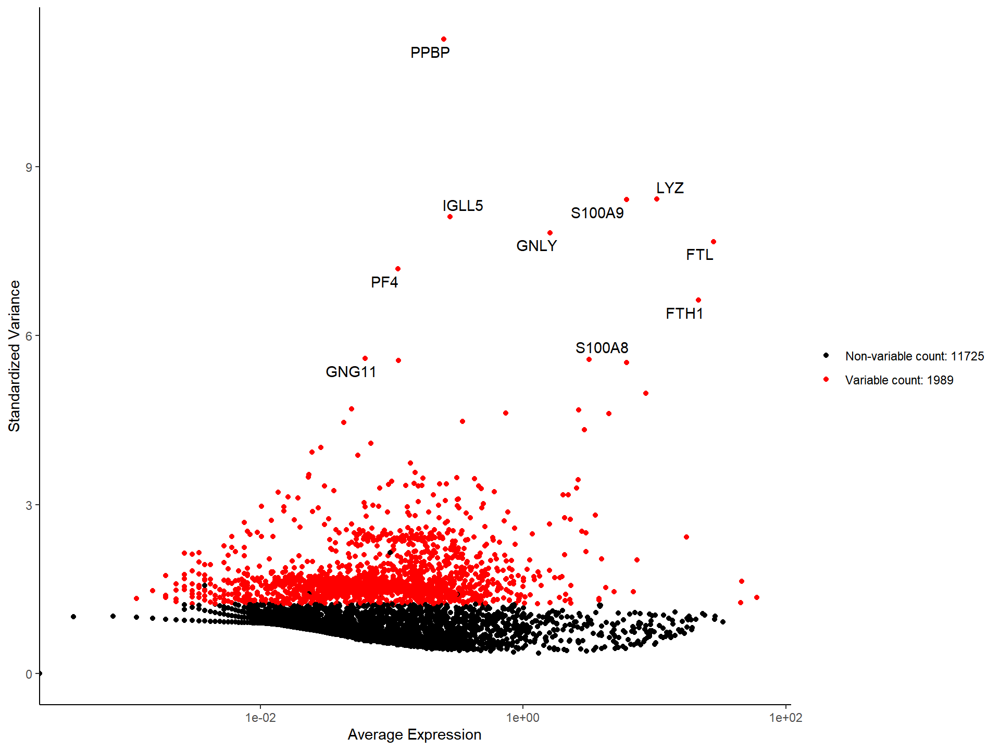

1 Basic: preprocessing and clustering
We created Seurat-like functions to help you get started effortlessly.
1.2 QC
# colData(pbmc)$percent.mt <- PercentageFeatureSet(pbmc, "^MT-")
pbmc[["percent.mt"]] <- PercentageFeatureSet(pbmc, "^MT-")
VlnPlot(pbmc, features = c("nFeature_RNA", "nCount_RNA", "percent.mt"))## ************************************************** >=0 | 32738 (100%)
## ************************* >=1 | 16634 (51%)
## ********************** >=2 | 14702 (45%)
## ********************* >=3 | 13714 (42%)
## ******************** >=4 | 13034 (40%)
## ******************* >=5 | 12572 (38%)
## ******************* >=6 | 12198 (37%)
## ****************** >=7 | 11876 (36%)
## ****************** >=8 | 11627 (36%)
## ***************** >=9 | 11379 (35%)
## ***************** >=10 | 11139 (34%)pbmc <- subset_feature(pbmc, mincell = 3, peek=FALSE)
pbmc <- subset(pbmc, subset = nFeature_RNA > 200 & nFeature_RNA < 2500 & percent.mt < 5)
pbmc## class: SingleCellExperiment
## dim: 13714 2638
## metadata(1): Samples
## assays(1): counts
## rownames(13714): AL627309.1 AP006222.2 ...
## PNRC2_ENSG00000215700 SRSF10_ENSG00000215699
## rowData names(2): ID Symbol
## colnames: NULL
## colData names(5): Sample Barcode nFeature_RNA
## nCount_RNA percent.mt
## reducedDimNames(0):
## mainExpName: NULL
## altExpNames(0):plot1 <- FeatureScatter(pbmc, feature1 = "nCount_RNA", feature2 = "percent.mt")
plot2 <- FeatureScatter(pbmc, feature1 = "nCount_RNA", feature2 = "nFeature_RNA")
library(aplot)
plot_list(plot1, plot2)
Users can also use plotColData() to visualize the QC data.
# VlnPlot-like
p1 <- plotColData(pbmc, y = 'nCount_RNA')
# FeatureScatter-like
p2 <- plotColData(pbmc, x = "nCount_RNA", y = "percent.mt")
plot_list(p1, p2)
1.3 Variable features
pbmc <- NormalizeData(pbmc)
pbmc <- FindVariableFeatures(pbmc)
top10 <- head(VariableFeatures(pbmc), 10)
top10## [1] "PPBP" "LYZ" "S100A9" "IGLL5" "GNLY" "FTL"
## [7] "PF4" "FTH1" "GNG11" "S100A8"
1.4 Dimensional reduction
pbmc <- ScaleData(pbmc)
pbmc <- runPCA(pbmc, subset_row = VariableFeatures(pbmc), exprs_values = "scaled")
ElbowPlot(pbmc)
1.5 Clustering
set.seed(2024-10-01)
pbmc <- FindNeighbors(pbmc, dims = 1:10)
pbmc <- FindClusters(pbmc)
head(Idents(pbmc), 5)## AAACATACAACCAC-1 AAACATTGAGCTAC-1 AAACATTGATCAGC-1
## 1 2 3
## AAACCGTGCTTCCG-1 AAACCGTGTATGCG-1
## 4 5
## Levels: 1 2 3 4 5 6 7 8 91.7 Find Markers
# find all markers of cluster 2
cluster2.markers <- FindMarkers(pbmc, ident.1 = 2)
head(cluster2.markers, n = 5)## pval padj avg_log2FC pct.1 pct.2
## CD79A 5.305484e-102 7.275940e-98 68.33509 1 0.052
## CD74 1.995011e-87 1.367979e-83 -106.95385 1 0.787
## CD79B 2.013334e-85 9.203619e-82 54.24136 1 0.141
## MS4A1 1.920813e-84 6.585508e-81 46.48265 1 0.062
## HLA-DQA1 2.199464e-82 6.032690e-79 10.08589 1 0.098# find all markers distinguishing cluster 5 from clusters 0 and 3
cluster5.markers <- FindMarkers(pbmc, ident.1 = 5, ident.2 = c(0, 3))
head(cluster5.markers, n = 5)## pval padj avg_log2FC pct.1 pct.2
## GZMB 4.691392e-80 6.433775e-76 156.62778 1 0.040
## NKG7 3.980428e-78 2.729380e-74 100.09227 1 0.172
## GNLY 5.141676e-77 2.350431e-73 111.81262 1 0.120
## PRF1 3.439975e-72 1.179396e-68 65.89194 1 0.091
## CST7 2.280830e-69 6.255860e-66 54.83849 1 0.135# find markers for every cluster compared to all remaining cells,
# report only the positive ones
library(dplyr)
pbmc.markers <- FindAllMarkers(pbmc, only.pos = TRUE)
topN_marker <- function(markers, n) {
markers %>%
group_by(cluster) %>%
dplyr::filter(avg_log2FC > 1) %>%
slice_head(n = n) %>%
ungroup()
}
top10 <- topN_marker(pbmc.markers, 10)
split(top10$gene, top10$cluster)## $`1`
## [1] "CCL5" "NKG7" "GZMK" "CST7" "CTSW"
## [6] "IL32" "TMSB10" "CD8A" "C1orf162" "KLRG1"
##
## $`2`
## [1] "CD79A" "CD79B" "MS4A1" "HLA-DQA1"
## [5] "HLA-DQB1" "TCL1A" "LINC00926" "VPREB3"
## [9] "SRGN" "HLA-DQA2"
##
## $`3`
## [1] "LTB" "LDHB" "IL32" "IL7R" "CD3D" "RPS3" "RPS25"
## [8] "RPS27" "RPS12" "RPS18"
##
## $`4`
## [1] "S100A9" "S100A8" "LYZ" "LGALS2" "FCN1" "TYROBP"
## [7] "CST3" "FTL" "FTH1" "GPX1"
##
## $`5`
## [1] "GZMB" "GNLY" "NKG7" "PRF1" "FGFBP2" "GZMA"
## [7] "CST7" "CTSW" "SPON2" "CD247"
##
## $`6`
## [1] "FCGR3A" "LST1" "FCER1G"
## [4] "IFITM3" "SERPINA1" "COTL1"
## [7] "RP11-290F20.3" "MS4A7" "IFITM2"
## [10] "FTL"
##
## $`7`
## [1] "RPS27" "MALAT1" "RPL32" "RPL9" "SH3BGRL3"
## [6] "RPS25" "RPL30" "RPS12" "RPL21" "RPS13"
##
## $`8`
## [1] "FCER1A" "ENHO" "PHACTR1" "CLEC10A" "CD1C"
## [6] "SERPINF1" "CLIC2" "HLA-DQA2" "GSN" "NDRG2"
##
## $`9`
## [1] "PF4" "GP9" "ITGA2B" "AP001189.4"
## [5] "GNG11" "SDPR" "TMEM40" "TUBB1"
## [9] "SPARC" "PTCRA"1.7.1 Marker gene information
top1 <- topN_marker(pbmc.markers, 1)
gene_table <- gene_summary_table(top1, gene_col = 'gene',
cluster_col = 'cluster', keyType='SYMBOL', output = "data.frame")
gene_table## ENTREZID gene pval padj avg_log2FC
## 1 2205 FCER1A 1.512234e-51 2.073878e-47 66.02055
## 2 2214 FCGR3A 8.939859e-77 1.226012e-72 26.60405
## 3 3002 GZMB 4.753779e-82 6.519332e-78 148.98625
## 4 4050 LTB 2.222889e-52 3.048470e-48 59.65963
## 5 5196 PF4 3.554569e-72 4.874736e-68 92.82031
## 6 6232 RPS27 4.326148e-45 8.475542e-42 10.60607
## 7 6280 S100A9 6.246079e-116 8.565872e-112 226.06146
## 8 6352 CCL5 4.316148e-98 5.919165e-94 67.29457
## 9 973 CD79A 5.305484e-102 7.275940e-98 68.33509
## pct.1 pct.2 cluster name
## 1 1 0.012 8 FCER1A
## 2 1 0.143 6 FCGR3A
## 3 1 0.073 5 GZMB
## 4 1 0.651 3 LTB
## 5 1 0.003 9 PF4
## 6 1 0.996 7 RPS27
## 7 1 0.205 4 S100A9
## 8 1 0.224 1 CCL5
## 9 1 0.052 2 CD79A
## description
## 1 Fc epsilon receptor Ia
## 2 Fc gamma receptor IIIa
## 3 granzyme B
## 4 lymphotoxin beta
## 5 platelet factor 4
## 6 ribosomal protein S27
## 7 S100 calcium binding protein A9
## 8 C-C motif chemokine ligand 5
## 9 CD79a molecule
## summary
## 1 The immunoglobulin epsilon receptor (IgE receptor) is the initiator of the allergic response. When two or more high-affinity IgE receptors are brought together by allergen-bound IgE molecules, mediators such as histamine that are responsible for allergy symptoms are released. This receptor is comprised of an alpha subunit, a beta subunit, and two gamma subunits. The protein encoded by this gene represents the alpha subunit. [provided by RefSeq, Aug 2011]
## 2 This gene encodes a receptor for the Fc portion of immunoglobulin G, and it is involved in the removal of antigen-antibody complexes from the circulation, as well as other responses, including antibody dependent cellular mediated cytotoxicity and antibody dependent enhancement of virus infections. This gene (FCGR3A) is highly similar to another nearby gene (FCGR3B) located on chromosome 1. The receptor encoded by this gene is expressed on natural killer (NK) cells as an integral membrane glycoprotein anchored through a transmembrane peptide, whereas FCGR3B is expressed on polymorphonuclear neutrophils (PMN) where the receptor is anchored through a phosphatidylinositol (PI) linkage. Mutations in this gene are associated with immunodeficiency 20, and have been linked to susceptibility to recurrent viral infections, susceptibility to systemic lupus erythematosus, and alloimmune neonatal neutropenia. Alternatively spliced transcript variants encoding different isoforms have been found for this gene. [provided by RefSeq, Aug 2020]
## 3 This gene encodes a member of the granzyme subfamily of proteins, part of the peptidase S1 family of serine proteases. The encoded preproprotein is secreted by natural killer (NK) cells and cytotoxic T lymphocytes (CTLs) and proteolytically processed to generate the active protease, which induces target cell apoptosis. This protein also processes cytokines and degrades extracellular matrix proteins, and these roles are implicated in chronic inflammation and wound healing. Expression of this gene may be elevated in human patients with cardiac fibrosis. [provided by RefSeq, Sep 2016]
## 4 Lymphotoxin beta is a type II membrane protein of the TNF family. It anchors lymphotoxin-alpha to the cell surface through heterotrimer formation. The predominant form on the lymphocyte surface is the lymphotoxin-alpha 1/beta 2 complex (e.g. 1 molecule alpha/2 molecules beta) and this complex is the primary ligand for the lymphotoxin-beta receptor. The minor complex is lymphotoxin-alpha 2/beta 1. LTB is an inducer of the inflammatory response system and involved in normal development of lymphoid tissue. Lymphotoxin-beta isoform b is unable to complex with lymphotoxin-alpha suggesting a function for lymphotoxin-beta which is independent of lympyhotoxin-alpha. Alternative splicing results in multiple transcript variants encoding different isoforms. [provided by RefSeq, Jul 2008]
## 5 This gene encodes a member of the CXC chemokine family. This chemokine is released from the alpha granules of activated platelets in the form of a homotetramer which has high affinity for heparin and is involved in platelet aggregation. This protein is chemotactic for numerous other cell type and also functions as an inhibitor of hematopoiesis, angiogenesis and T-cell function. The protein also exhibits antimicrobial activity against Plasmodium falciparum. [provided by RefSeq, Oct 2014]
## 6 Ribosomes, the organelles that catalyze protein synthesis, consist of a small 40S subunit and a large 60S subunit. Together these subunits are composed of four RNA species and approximately 80 structurally distinct proteins. This gene encodes a member of the S27e family of ribosomal proteins and component of the 40S subunit. The encoded protein contains a C4-type zinc finger domain that can bind to zinc and may bind to nucleic acid. Mutations in this gene have been identified in numerous melanoma patients and in at least one patient with Diamond-Blackfan anemia (DBA). Elevated expression of this gene has been observed in various human cancers. As is typical for genes encoding ribosomal proteins, there are multiple processed pseudogenes of this gene dispersed through the genome. [provided by RefSeq, Jul 2018]
## 7 The protein encoded by this gene is a member of the S100 family of proteins containing 2 EF-hand calcium-binding motifs. S100 proteins are localized in the cytoplasm and/or nucleus of a wide range of cells, and involved in the regulation of a number of cellular processes such as cell cycle progression and differentiation. S100 genes include at least 13 members which are located as a cluster on chromosome 1q21. This protein may function in the inhibition of casein kinase and altered expression of this protein is associated with the disease cystic fibrosis. This antimicrobial protein exhibits antifungal and antibacterial activity. [provided by RefSeq, Nov 2014]
## 8 This gene is one of several chemokine genes clustered on the q-arm of chromosome 17. Chemokines form a superfamily of secreted proteins involved in immunoregulatory and inflammatory processes. The superfamily is divided into four subfamilies based on the arrangement of the N-terminal cysteine residues of the mature peptide. This chemokine, a member of the CC subfamily, functions as a chemoattractant for blood monocytes, memory T helper cells and eosinophils. It causes the release of histamine from basophils and activates eosinophils. This cytokine is one of the major HIV-suppressive factors produced by CD8+ cells. It functions as one of the natural ligands for the chemokine receptor chemokine (C-C motif) receptor 5 (CCR5), and it suppresses in vitro replication of the R5 strains of HIV-1, which use CCR5 as a coreceptor. Alternative splicing results in multiple transcript variants that encode different isoforms. [provided by RefSeq, Jul 2013]
## 9 The B lymphocyte antigen receptor is a multimeric complex that includes the antigen-specific component, surface immunoglobulin (Ig). Surface Ig non-covalently associates with two other proteins, Ig-alpha and Ig-beta, which are necessary for expression and function of the B-cell antigen receptor. This gene encodes the Ig-alpha protein of the B-cell antigen component. Alternatively spliced transcript variants encoding different isoforms have been described. [provided by RefSeq, Jul 2008]